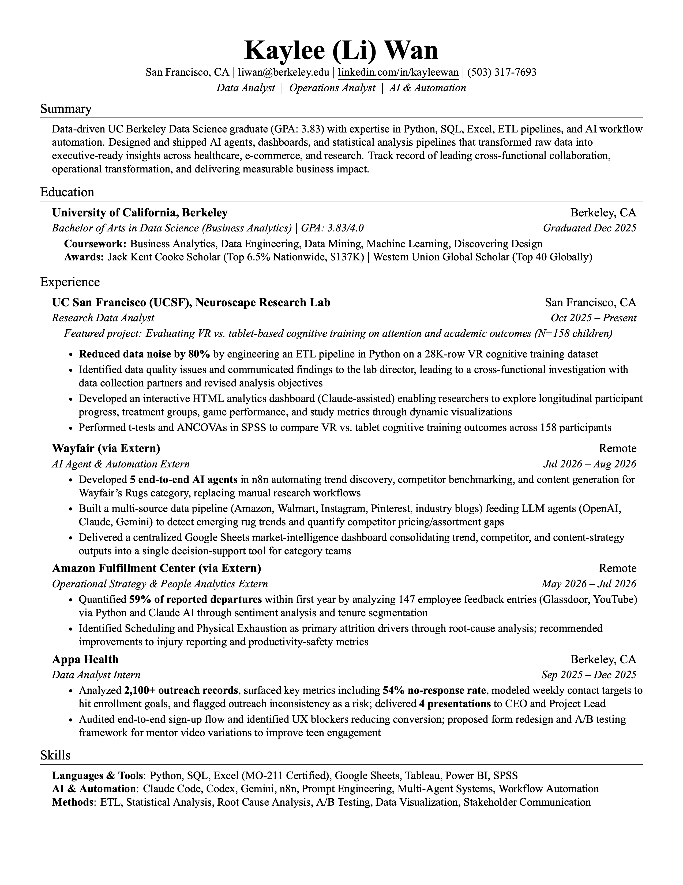

Business Analyst · Operations · AI & Automation
Hi, I'm Kaylee
🟢 Open to WorkI turn messy data into decisions — building ETL pipelines, dashboards, and AI agents that give teams clarity to move faster and make better decisions.

About
UC Berkeley Data Science graduate (GPA: 3.83) with expertise in Excel, SQL, Python, ETL pipelines, and AI workflow automation. Designed and shipped AI agents, dashboards, and statistical analysis pipelines that transformed raw data into executive-ready insights across healthcare, e-commerce, and research. Track record of leading cross-functional collaboration, operational transformation, and delivering measurable business impact.
Education
UC Berkeley — B.A. Data Science
Business Analytics focus · GPA 3.83/4.0 · Dec 2025
Recognition
Jack Kent Cooke Scholar (Top 6.5% Nationwide) · Western Union Global Scholar (Top 40 Globally)
Languages
Mandarin Chinese, English
Interests
Design & Sketching, Virtual Reality (VR) Games, Photography, Mentoring, Learning New Tools
Projects
Selected work
Experience
Oct 2025 – Present
Research Data Analyst
UCSF, Neuroscape Research Lab
Aug 2024 – Jul 2026
Lead Orientation Leader
UC Berkeley, Berkeley International Office
Jul 2026 – Aug 2026
AI Agent & Automation Extern
Wayfair (via Extern)
May 2026 – Jul 2026
Operational Strategy & People Analytics Extern
Amazon Fulfillment Center (via Extern)
Sep 2025 – Dec 2025
Data Analyst Intern
Appa Health
Oct 2021 – May 2023
Scheduling & Front Desk Operations Staff
Berkeley City College Learning Resource Center
Resume
Resume
140%
⬇ Download

Contact
Let's work together
Open to Business Analyst, Operations Analyst, and AI & Automation roles. Based in the San Francisco Bay Area — happy to chat remote or on-site.